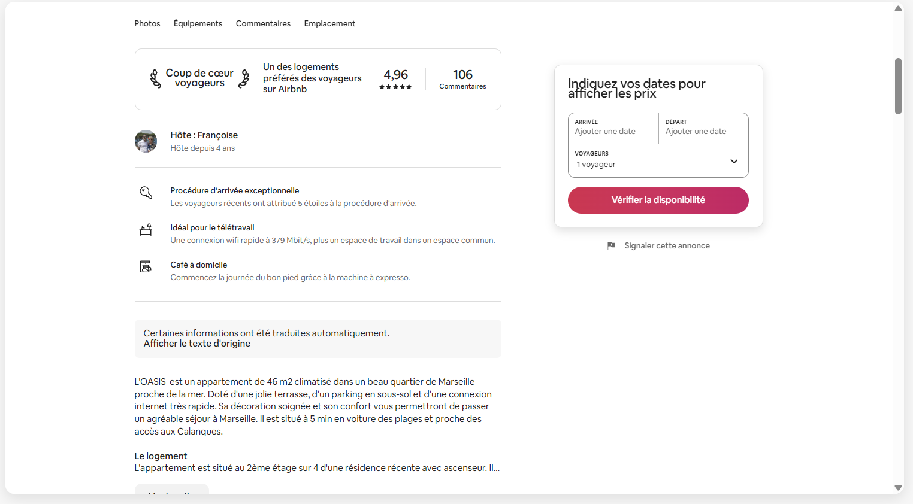
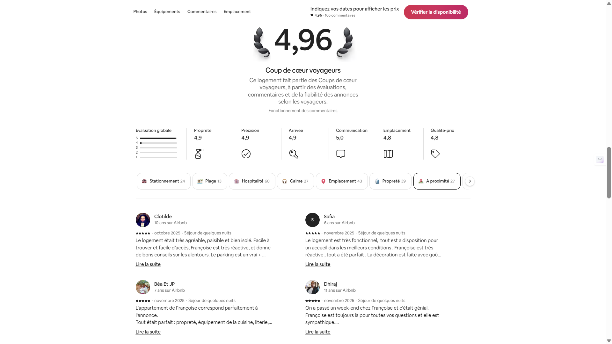
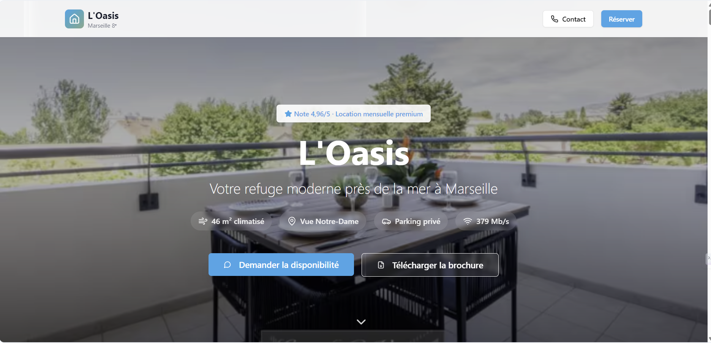

4,96/5
Note globale
Évaluation moyenne attribuée par 106 voyageurs sur la plateforme.
Portfolio & blog
Pendant 3 ans, j’ai co-géré un logement sur Airbnb à Marseille — référencement, relation client et optimisation continue — avec une note de 4,96/5 sur 106 avis et le statut Superhôte.
J’ai participé à la mise en place du logement et créé l’annonce Airbnb de zéro — choix des angles photo, rédaction du titre et de la description, configuration des tarifs, des règles et du calendrier — en travaillant dès le départ la lisibilité de l’offre et son référencement sur la plateforme.
Géré en co-hôte, ce logement baptisé L’Oasis Marseille est situé dans le 8e arrondissement de Marseille, quartier Bonneveine — entre les plages du Prado (5 min) et les Calanques (15 min), avec une terrasse de 10 m² offrant une vue imprenable sur Notre-Dame de la Garde.
Cette expérience m’a confronté très concrètement à ce que signifie gérer une offre, satisfaire des clients et optimiser ses résultats sur une plateforme digitale. C’était ma première vraie confrontation avec la logique de performance et de réputation en ligne — et une école accélérée en relation client, SEO plateforme et prise de décision rapide.
Création de l’annonce de zéro sur un logement de 46 m² — rédaction du titre et de la description, sélection et hiérarchisation des photos professionnelles, structuration des équipements, définition des règles de la maison, mise en place du calendrier et de la grille tarifaire initiale, et rédaction du guide voyageur.

Travail sur les mots-clés pertinents dans le titre et la description, soin apporté aux photos (première image, ordre, qualité), complétion à 100 % du profil, taux de réponse rapide et sollicitation des avis — autant de leviers qui font remonter l’annonce dans l’algorithme Airbnb.

Mise à jour du calendrier, coordination des check-in et check-out, suivi du ménage, gestion de la maintenance et résolution des imprévus au quotidien — avec une organisation rigoureuse pour assurer une expérience voyageur fluide à chaque séjour.

Communication réactive et personnalisée en quatre langues — français, anglais, espagnol et italien — avec un taux de réponse de 100 % en moins d’une heure. Gestion des demandes spéciales, réponses aux avis et création d’un climat de confiance avec les voyageurs à chaque séjour.

Ajustement dynamique des prix selon la saison et la concurrence, amélioration régulière des photos et des textes, veille sur les performances (taux d’occupation, ranking, score Superhôte) et itérations en fonction des retours voyageurs.

4,96/5
Note globale
Évaluation moyenne attribuée par 106 voyageurs sur la plateforme.
3
Années d’expérience
Une activité suivie sur la durée avec gestion continue.
106
Commentaires clients
Des retours réguliers qui témoignent d’une vraie exigence de service.
Pour réduire la dépendance à la plateforme et explorer la location longue durée hors commission, j’ai conçu un site complet pour le logement avec Base44. Ce n’était pas un simple prototype — c’était un produit structuré avec une vraie stratégie de contenu et d’acquisition.
Le site comprend :

Cette expérience m’a donné ma première vraie leçon en marketing digital : la visibilité, ça se construit et ça s’entretient. Optimiser une annonce Airbnb, c’est exactement comme optimiser une page pour Google — on travaille le titre, les mots-clés, la pertinence du contenu, et on améliore en fonction des signaux reçus.
Mais la leçon la plus durable, c’est celle sur la relation client. Un voyageur qui arrive à minuit et ne trouve pas les clés n’a pas besoin d’excuses — il a besoin d’une solution immédiate. J’ai appris à anticiper, à répondre vite, et à transformer un problème en expérience positive. Ces 106 avis sont le reflet direct de cette attention quotidienne.
C’est aussi là que j’ai compris ce que « itération » veut dire concrètement : chaque séjour, chaque retour voyageur était une information exploitable. J’ajustais, j’améliorais, j’observais l’effet. Un cycle court, concret, sans filet.
Rédaction d’annonce orientée mots-clés et compréhension de l’algorithme Airbnb.
Gestion multilingue, réactivité et personnalisation des échanges.
Planification, coordination à deux et gestion des imprévus avec réactivité.
Compréhension des logiques de ranking et d’optimisation sur une plateforme.
Prototype Base44 conçu pour proposer le logement hors plateforme.